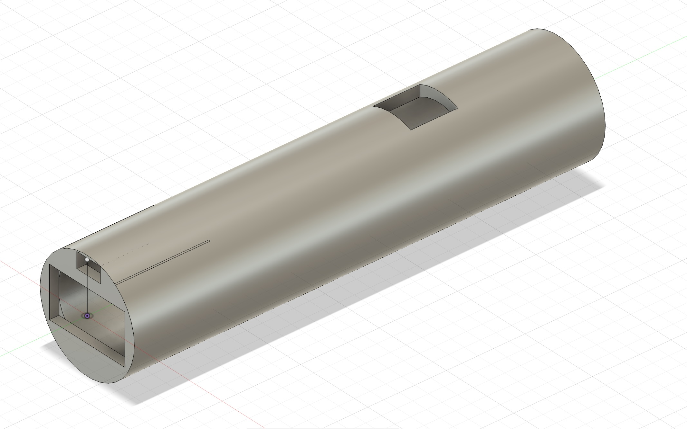

Robotics Projects
- RFID Key Controlled Lock
A servo‑powered locking system activated using RFID security tags. - Custom‑Built Taser
Designed and built using a voltage multiplier and a custom 3D‑printed CAD case. It includes a safety switch and is rechargeable via USB‑C.

Watch Building
I co-founded a watch business where we use Seiko parts to build custom watches made to order.

Music
I hold a Grade 7 piano certification and am passionate about learning guitar. I am also actively involved in my school’s jazz band, where I have performed at the Bahrain Jazz Festival multiple times.